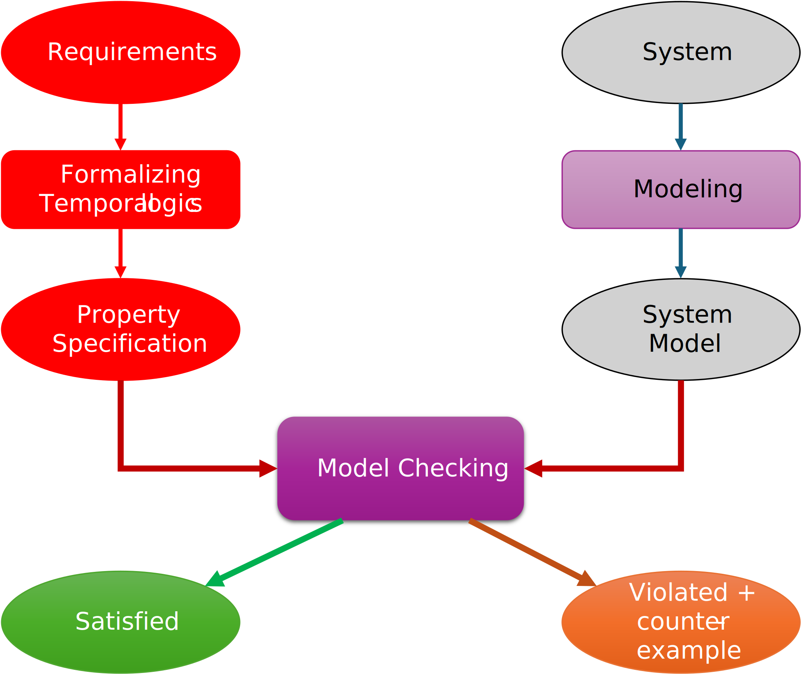
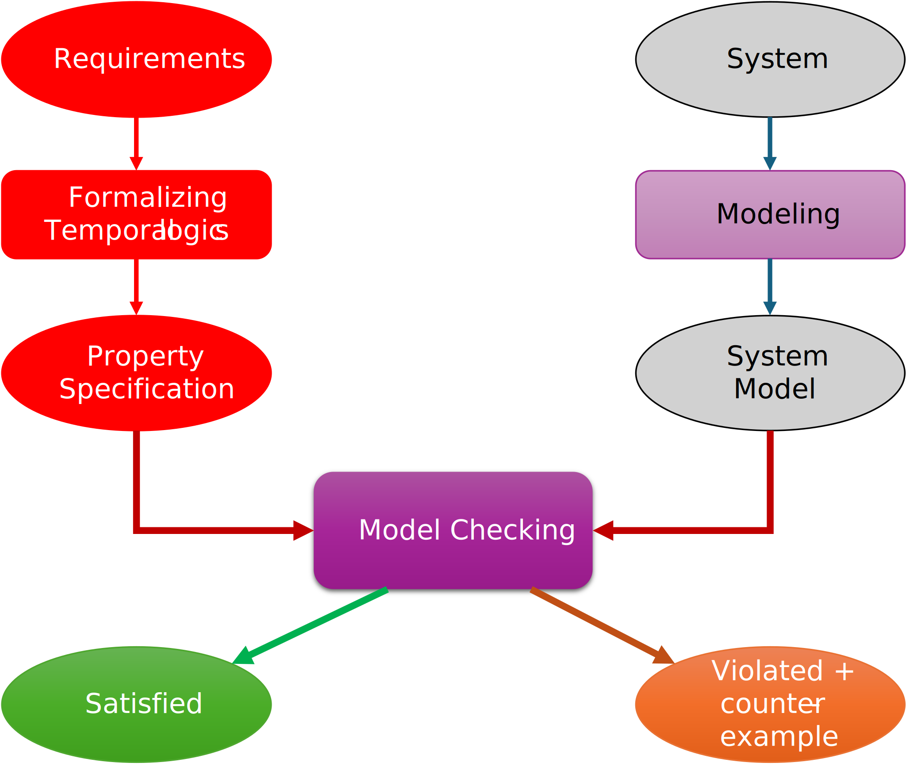

Conception et vérification
de systèmes critiques
La spécification des propriétés avec la logique CTL
2A Cursus Ingénieurs
- ST5 : Modélisation fonctionnelle et régulation
CentraleSupelec - Université Paris-Saclay - 2025/2026
CentraleSupelec - Université Paris-Saclay - 2025/2026

Principe du Model-Checking
 

Logiques temporelles
Pourquoi ?
- Pas de variable pour gérer le temps (instants implicites)
- Temporel $\neq$ temporisé
la logiques temporelles ne quantifient pas écoulement du temps. - Deux approches :
- temps linéaire : propriétés des séquences d'exécutions (futur déterminé)
- temps arborescent : propriétés de l'arbre d'exécutions (tous les futurs possibles)
Arbre de calcul
-
Soit $\mathcal{T} = (S, \to, s^0)$ un système de transition.
Intuitivement, l'arbre de calcul de $\mathcal{T}$ est le dépliage acyclique de $\mathcal{T}$. -
Formellement, le dépliage est le plus petit système de transition
$(U, \to', u^0)$ (éventuellement infini) avec un étiquetage $l : U \to S$ tel que :
- $u^0 \in U$ et $l(u^0) = s^0$
-
si $u \in U$, $l(u)=s$, et $s \to s'$ pour certains $u, s, s'$
alors il existe $u' \in U$ avec $u \to' u'$ et $l(u') = s'$ -
$u^0$ n'a pas de prédécesseur direct, et tous les autres états de $U$
ont exactement
un prédécesseur direct
Arbre de calcul
Exemple
Un système de transition et son arbre de calcul
(étiquetage $l$ donné en bleu)
(étiquetage $l$ donné en bleu)

Arbre de calcul
Remarques
-
Pour la vérification de propriétés CTL, la construction de l'arbre de calcul
n'est pas nécessaire ($\to$ voir le cours du Model-Checking). - Cependant, cette définition permet de clarifier les concepts sous-jacents
aux opérateurs de la logique CTL.
LTL vs CTL
- LTL - (Linear-Time Logic)
- Décrit les propriétés des exécutions individuelles.
- Sémantique définie comme un ensemble d'exécutions.
- CTL - (Computation Tree Logic)
- Décrit les propriétés d'un arbre de calcul.
- les formules peuvent traiter plusieurs exécutions simultanément.
- Sémantique définie en termes d'états.
- Décrit les propriétés d'un arbre de calcul.
Computation Tree Logic - CTL
Aperçu
- Combine les opérateurs temporels avec une quantification sur les exécutions
- Les opérateurs ont la forme suivante $\to$ $Q~T$
- $Q$
- $E$ : there exists an execution
- $A$ : for all executions
- $T$
- $X \equiv \bigcirc$ : next
- $F \equiv \Diamond$ : finally
- $G \equiv \square$ : globally
- $U \equiv \bigcup$ : until
- (et peut-être d'autres)
- $Q$
Computation Tree Logic - CTL
La syntaxe
- Nous définissons d'abord une syntaxe minimale. Nous définissons ensuite
des opérateurs supplémentaires à l'aide de cette syntaxe minimale. -
Soit $AP$ un ensemble de propositions atomiques.
L'ensemble des formules CTL sur $AP$ est le suivant :- si $a \in AP$, alors $a$ est une formule CTL ;
- si $\phi_1,~\phi_2$ sont des formules CTL, alors le sont aussi
- $\neg \phi_1,~~~~~~~~ \phi_1 \lor \phi_2,$
- $EX~ \phi_1,~~~~~~~~ EG~ \phi_1, ~~~~~~~~ E~(\phi_1~ U ~\phi_2),$
Computation Tree Logic - CTL
La sémantique
- soit $\mathcal{K} = (S, \to, s^0, AP, v)$ une structure de Kripke.
- $S$ : un ensemble d'états, $\to~\in S \times S$ : une relation entre états,
$s^0$ : l'état initial,
$AP$ : ensemble des propositions atomiques, $v \in S \to 2^{AP}$ : une fonction d'étiquetage
- $S$ : un ensemble d'états, $\to~\in S \times S$ : une relation entre états,
$s^0$ : l'état initial,
-
Nous définissons la sémantique de chaque formule CTL $\phi$ sur $AP$
par rapport à $\mathcal{K}$ comme un ensemble d'états $[\![ \phi ]\!] _{\mathcal{K}}$, comme suit :
$$
\begin{aligned}
~[\![ a ]\!] _{\mathcal{K}} & = \{ s ~|~ a \in v(s) \} ~~~~~~~~ a \in AP\\
[\![ \neg \phi_1 ]\!] _{\mathcal{K}} & = S \backslash [\![ \phi_1 ]\!] _{\mathcal{K}} \\
[\![ \phi_1 \lor \phi_2 ]\!] _{\mathcal{K}}& = [\![ \phi_1 ]\!] \cup [\![ \phi_2 ]\!] _{\mathcal{K}}\\
[\![ EX~ \phi_1 ]\!] _{\mathcal{K}}& = \{ s ~|~ \text{il existe un état} ~t~ \text{tel que} ~ s \to t ~\text{et}~ t \in [\![ \phi_1 ]\!] _{\mathcal{K}}\} \\
[\![ EG~ \phi_1 ]\!] _{\mathcal{K}}& = \{ s ~|~ \text{il existe un chemin} ~\sigma~ \text{tel que} ~\sigma(0)=s~
\text{et} ~ \sigma(i) \in [\![ \phi_1 ]\!] _{\mathcal{K}} ~\forall i \geq 0\}\\
[\![ E~(\phi_1~ U ~\phi_2) ]\!] _{\mathcal{K}}& = \{ s ~|~ \text{il existe un chemin} ~\sigma~ \text{tel que} ~\sigma(0)=s~
\text{et} ~ k \geq 0, ~\sigma(i) \in [\![ \phi_1 ]\!] _{\mathcal{K}} ~\forall i < k,
~\sigma(k) \in [\![ \phi_2 ]\!] _{\mathcal{K}}\}\\
\end{aligned}
$$
Computation Tree Logic - CTL
Opérateurs supplémentaires
$$ \begin{aligned} false & \equiv \neg true \\ \phi_1 \land \phi_2 & \equiv \neg (\neg \phi_1 \lor \neg \phi_2) \\ \phi_1 \Rightarrow \phi_2 & \equiv \neg \phi_1 \lor \phi_2 \\ EF~ \phi & \equiv E~(true ~U~ \phi) \\ AX~ \phi & \equiv \neg EX~\neg \phi \\ AG~ \phi & \equiv \neg EF~\neg \phi \\ AF~ \phi & \equiv \neg EG~\neg \phi \\ A~ (\phi_1 ~U~ \phi_2) & \equiv \neg E~ \neg (\phi_1 ~U~ \phi_2) \end{aligned} $$Opérateurs CTL et arbres de calcul
Nous utilisons l'arbre de calcul suivant comme exemple d'exécution
(avec des distributions variables des états rouge et noir).
Dans les diapositives suivantes, l'état le plus élevé satisfait une formule donnée
Les états noirs satisfont $p$ et les états rouges satisfont $q$.


La spécification
-
Le problème du dîner des philosophes est un problème
de synchronisation introduit par Dijkstra en 1965. -
Il illustre les problèmes du partage des ressources dans
la programmation concurrente.- le blocage, la famine et l'exclusion mutuelle...
-
Énoncé du problème :
- $K$ ($K = 5$) philosophes sont assis autour d'une table ronde.
- chaque philosophe alterne entre réflexion et repas.
- il y a une baguette entre chaque philosophe ($K$ baguettes au total).
- un philosophe doit prendre deux baguettes (gauche et droite) pour manger.
- un seul philosophe peut utiliser une baguette à la fois.
Quelques propriétés CTL
- Supposons les propositions atomiques suivantes :
- $e_i \to$ le philosophe $i$ est en train de manger
- $f_i \to$ le philosophe $i$ vient de finir de manger
- Les philosophes 1 et 4 ne mangeront jamais en même temps. $$ AG ~ \neg(e_1 \land e_4)$$
- Chaque fois que le philosophe 4 a fini de manger, il ne peut plus manger tant que le philosophe 3 n'a pas mangé. $$ AG ~(f_4 \Rightarrow A~(\neg e_4 ~W~ e_3))$$
- Le philosophe 2 sera le premier à manger. $$ A (\neg(e_1 \lor e_3 \lor e_4 \lor e_5) ~U~ e_2) $$
Exemple de formules imbriquées
$s^0 \in [\![ AF AG ~x ]\!]$ ?

-
Pour calculer la sémantique des formules avec des opérateurs imbriqués,
- nous calculons d'abord les états satisfaisant les formules les plus internes ;
- ensuite, nous utilisons ces résultats pour résoudre les formules englobantes.
- Dans cet exemple, nous calculons $ [\![ x ]\!]$, $ [\![AG ~x ]\!]$ et $ [\![AF AG ~x ]\!]$, dans cet ordre
Exemple de formules imbriquées
Calcul de $[\![ ~x~ ]\!]$

Exemple de formules imbriquées
Calcul de $[\![AG ~x~ ]\!]$ ou de $[\![\neg EF \neg x~ ]\!]$

Exemple de formules imbriquées
Calcul de $[\![AF AG ~x~ ]\!]$ ou de $[\![\neg EG \neg AG ~x~ ]\!]$